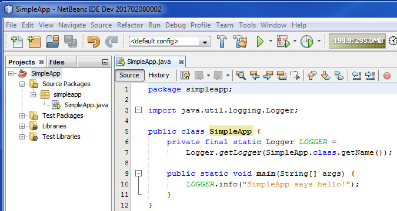
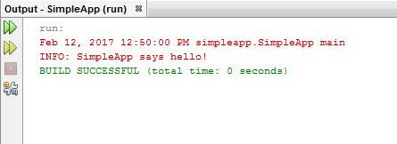
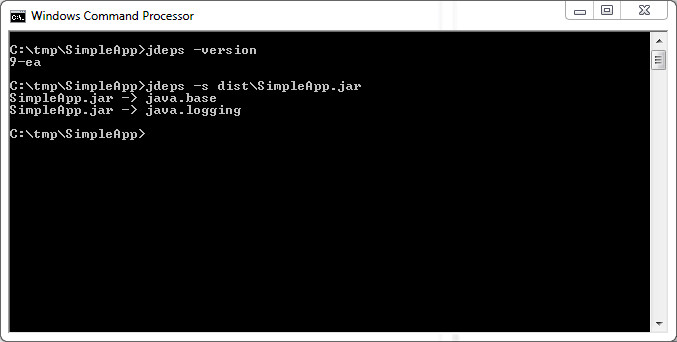
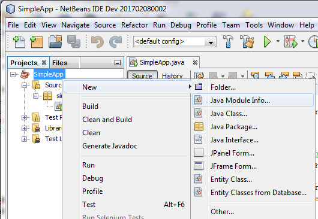
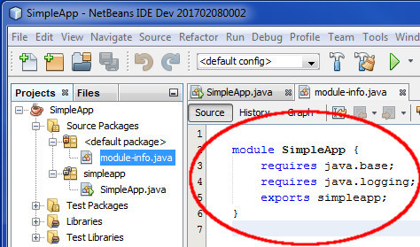
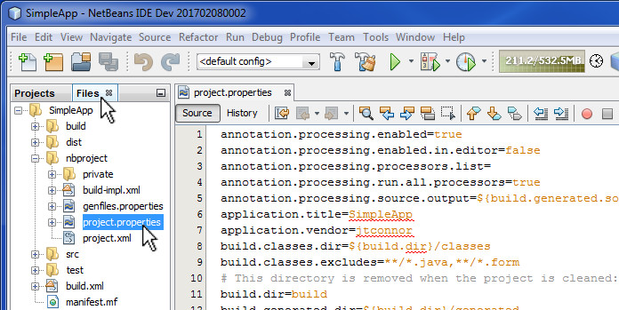
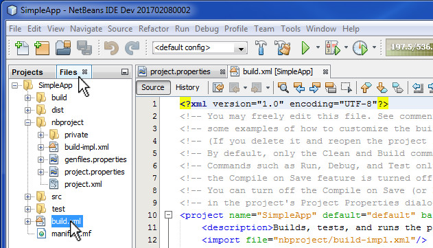
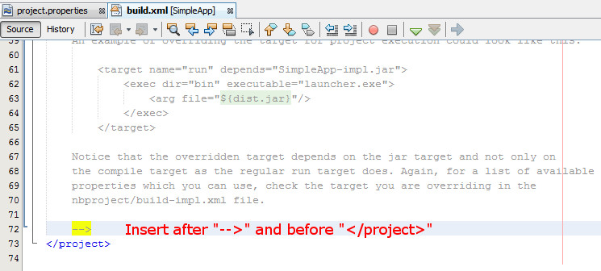
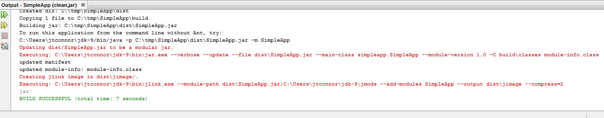
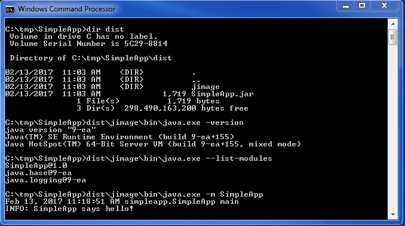

First off you can download an early access build of JDK9 and a corresponding early access JDK9 NetBeans build to get started.
For this recipe, we'll create a very simple JDK9 application called SimpleApp which just a logs a message using the Java Logging API. All Java 9 programs require the use of a module called java.base; the rationale behind choosing to invoke a logging method in this program is that it will require the module system to pull in an additional module called java.logging. Here's what the NetBeans project and source code look like:

When we run this program in NetBeans the output window shows this:

To modularize this program, the first thing we'll need to identify
is its module dependencies. We can accomplish this task by
taking advantage of a JDK9 utility called jdeps as
follows:

First we we first just invoke jdeps -version to confirm that indeed we're using a JDK9 version of the tool. Next we invoke jdeps -s on the NetBeans generated SimpleApp.jar file to get its module dependencies. In this instance, our program requires two modules. As briefly mentioned earlier, all Java 9 applications by default require the java.base module. Additionally our simple program calls a method in the java.logging module and hence has a dependency on it too.
With this information, we can introduce a module-info.java
file into our NetBeans project by right clicking on the SimpleApp
project and selecting New->Java Module Info...

Once created, the module-info.java file will appear in the SimpleApp's default package. The module specification will initially be empty, add the two requires clauses and one exports clause as depicted below.

With the module-info.java file properly situated and populated, the next time SimpleApp is built, NetBeans will add the compiled module-info.class file to contents of the SimpleApp.jar file, making it a modular jar.
It may still be a little early in the game, what appears to be missing in NetBeans at this point is the ability to construct runtime images using the JDK9 jlink utility. So let's do some customization to NetBeans to provide this capability. There are no doubt more elegant solutions, this one will enable you to output the the actual java commands that run, as they run, to aid in debugging.
The first step is to locate and edit SimpleApp's NetBeans project.properties file. You can find this file in NetBeans by clicking on the Files tab which gives you a filesystem view of your project. Underneath the nbproject/ directory you'll find the project.properties file. Double clicking on project.properties will open that file for editing:

Add the following text to the end of the project.properties file:
#
# Added to support creation of modular jar and jlink image.
# Change this property to match your JDK9 location
#
jdk9.basedir=C:\\Users\\jtconnor\\jdk-9
#
modular.jar.command=${jdk9.basedir}\\bin\\jar.exe
modular.jar.file=${dist.dir}\\${application.title}.jar
#
modular.jar.arg1=--verbose
modular.jar.arg2=--update
modular.jar.arg3=--file
modular.jar.arg4=${modular.jar.file}
modular.jar.arg5=--main-class
modular.jar.arg6=${main.class}
modular.jar.arg7=--module-version
modular.jar.arg8=1.0
modular.jar.arg9=-C
modular.jar.arg10=${build.dir}\\classes
modular.jar.arg11=module-info.class
modular.jar.args.concatenated=${modular.jar.arg1} ${modular.jar.arg2} ${modular.jar.arg3} ${modular.jar.arg4} ${modular.jar.arg5} ${modular.jar.arg6} ${modular.jar.arg7} ${modular.jar.arg8} ${modular.jar.arg9} ${modular.jar.arg10} ${modular.jar.arg11}
#
jlink.command=${jdk9.basedir}\\bin\\jlink.exe
jlink.module.dependency1=${modular.jar.file}
jlink.module.dependency2=${jdk9.basedir}\\jmods
jlink.module.path=${jlink.module.dependency1};${jlink.module.dependency2}
jlink.image.dir=${dist.dir}\\jimage
#
jlink.arg1=--module-path
jlink.arg2=${jlink.module.path}
jlink.arg3=--add-modules
jlink.arg4=${application.title}
jlink.arg5=--output
jlink.arg6=${jlink.image.dir}
jlink.arg7=--compress=2
jlink.args.concatenated=${jlink.arg1} ${jlink.arg2} ${jlink.arg3} ${jlink.arg4} ${jlink.arg5} ${jlink.arg6} ${jlink.arg7}
It's not as bad as it looks. Basically most of the work here involves setting up the command line arguments for running the JDK9 jar and jlink utilities. And with this setup, you should be able to more easily debug the modular jar and runtime image creation should it go awry. The one important change that you will need to make is the setting of the jdk9.basedir property:
#
# Added to support creation of modular jar and jlink image.
# Change this property to match your JDK9 location
#
jdk9.basedir=C:\\Users\\jtconnor\\jdk-9 <-- Change This to point to your JDK9 location!
With that step completed, the final modification goes to the SimpleApp's build.xml file. Just as before, this file can be found in the Files tab, under the SimpleApp/ directory. Double click on build.xml to edit the file:

Once the file is open, move to the end of the file. We are going to insert additional ant tasks right before </project> delimiter as follows:

And here's the text that should be placed there:
<target name="-post-jar" depends="-do-modular-jar,-do-jlink">
</target>
<target name="-do-modular-jar">
<echo message="Updating ${dist.jar} to be a modular jar."/>
<echo message="Executing: ${modular.jar.command} ${modular.jar.args.concatenated}"/>
<exec executable="${modular.jar.command}">
<arg value="${modular.jar.arg1}"/>
<arg value="${modular.jar.arg2}"/>
<arg value="${modular.jar.arg3}"/>
<arg value="${modular.jar.arg4}"/>
<arg value="${modular.jar.arg5}"/>
<arg value="${modular.jar.arg6}"/>
<arg value="${modular.jar.arg7}"/>
<arg value="${modular.jar.arg8}"/>
<arg value="${modular.jar.arg9}"/>
<arg value="${modular.jar.arg10}"/>
<arg value="${modular.jar.arg11}"/>
</exec>
</target>
<target name="-do-jlink">
<echo message="Creating jlink image in ${jlink.image.dir}/."/>
<echo message="Executing: ${jlink.command} ${jlink.args.concatenated}"/>
<exec executable="${jlink.command}">
<arg value="${jlink.arg1}"/>
<arg value="${jlink.arg2}"/>
<arg value="${jlink.arg3}"/>
<arg value="${jlink.arg4}"/>
<arg value="${jlink.arg5}"/>
<arg value="${jlink.arg6}"/>
<arg value="${jlink.arg7}"/>
</exec>
</target>
The SimpleApp project is now modified. Issuing a NetBeans "Clean and Build" on the SimpleApp project will now run the additional ant tasks that were incorporated into the project's build.xml file. Here's what the NetBeans output window should show:

Finally, let's take a look at what was built, and how the custom runtime image can be run. The screenshot that follows examines the SimpleApp's dist/ directory built by NetBeans. It shows that there are two entries: SimpleApp.jar (the modular jar file) and a jimage/ directory (the custom runtime image). It goes on to run java -version from the jimage/ directory to show that it's a JDK9 runtime, and then issues a java --list-modules to show what modules are part of this runtime. Notice only three appear versus what would normally be somewhere in the neighborhood of 90 for a full-fledged JDK9 runtime. And to top it off, the last command shows how the SimpleApp application is run from the jimage/ runtime.

The example shown here is specific to the Windows platform. If you wish to duplicate this effort on a Linux or MAC desktop, you'll need to modify the project.properties file accordingly.
Here's hoping this sheds some light on some of the new Java 9 features.